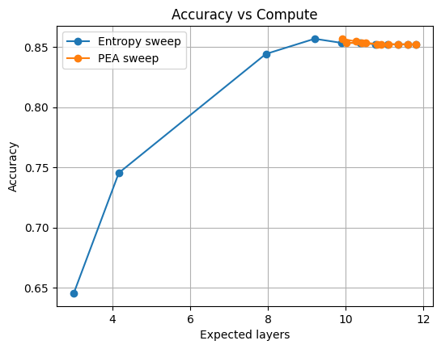
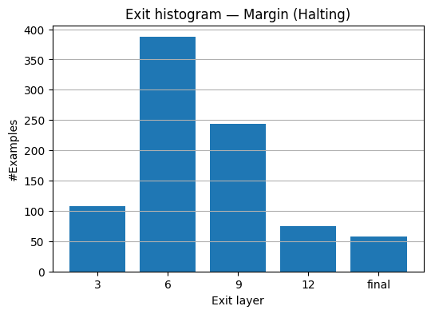
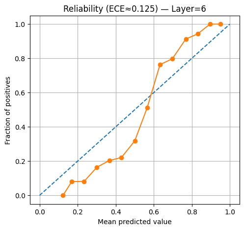

Efficient NLP inference architecture allowing intermediate early exits to save computational time.
This repository contains an implementation of Early Exit BERT, designed for efficient NLP inference. It allows the model to exit early at intermediate layers if it is confident enough, saving computation time without sacrificing accuracy. The core model extends bert-base-uncased with intermediate exit classifiers.
Evaluation & Results
This plot illustrates the trade-off between model accuracy and computational cost (measured in average layers or latency). By adjusting the exit threshold (entropy or margin), we can achieve a significant speedup with minimal loss in accuracy.

The histograms show the distribution of samples exiting at different layers. A good policy will allow "easy" samples to exit early (at lower layers) while forcing "hard" samples to go deeper through the transformer blocks.

Reliability diagrams check if the model's confidence corresponds to its actual accuracy. A well-calibrated model should closely follow the diagonal line.
